CONTENT OUTLINE
2023/10/21追加React的内容，需要做一些前端的开发
- 学习笔记
- 尚硅谷的React教程 源码：BaiduCloud
📢 愿你生活明朗，万物可爱🙏
〇、React起步
入手初步内容来源于这个 React 教程
源码可直取：传送门
1、使用 React 的原因/技术选型理由
React，基于构建用户界面的 JavaScript 库
基于React的特点：声明式、组件化、一次学习随处编写
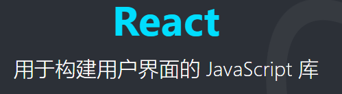
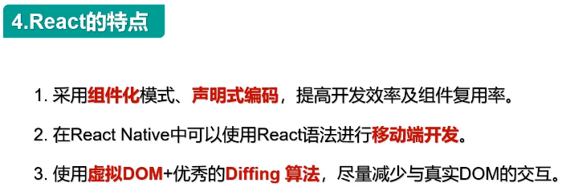
对于最后一个特性的理解：
Web端应用：React + React DOM
移动端应用：React + React Native
PC端应用：React + React Electron
小程序：React + Taro
VR界面：React + React 360
1、易学，学习曲线稍难于 Vue
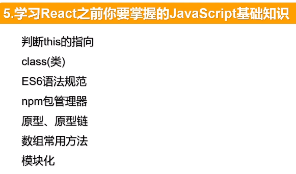
2、开发迅速
采用流行的 MVC 架构，组件化，以及React周边生态的完善性，如各种UI库、路由库、脚手架、Chrome-React-devTool等等。
解决原生 Javascript 的痛点
3、由 Facebook 大型公司提供维护
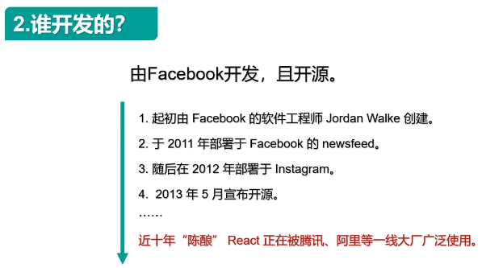
4、受欢迎，拥有火热的React社区
2、Quick Start
1 | npx create-react-app my-app |
项目中 package.json 中定义的启动脚本
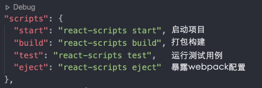
其中，npm eject 用于暴露 webpack 配置以手动配置 webpack 配置，但该操作不可逆；
除此之外，也有使用相应依赖来修改配置的选择，如 customize-cra
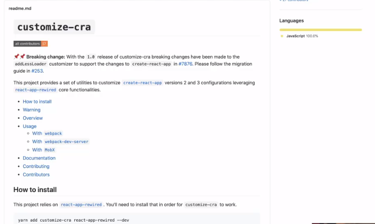
当说到为什么
CRA不把webpack配置暴露出来，Dan Abramov是这样说的：
这儿有关于这位大佬的自传，好喜欢这些传奇故事~~ 传送门在此
另外，需要学会利用 vscode 进行代码调试，在目录新建 .vscode 文件夹，继续新建 launch.js，然后在编辑器 debug 中配置
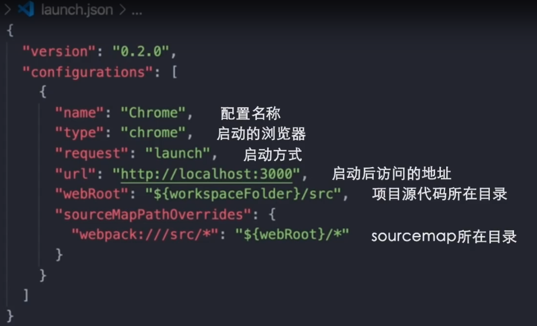
1 | { |
3、JSX指引
① JSX 是Javascript的扩展语法
② React Element 是不可不变的对象（immutable）
类似于
Object.freeze()方法，使得对象只可读
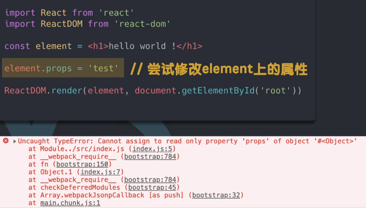
③ 经过 Babel 转译之后：
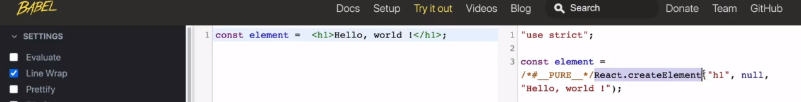
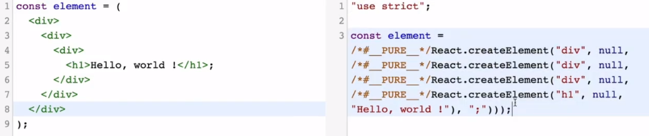
一、尚硅谷React全家桶笔记
001、React 简介
002、Hello_react
1、要是再 Html 中的 script 中使用 JSX， 要求 type = "text/babel"
2、ReactDOM.render(VDOM,document.getElementById('test')) 是替换虚拟 DOM，而不是追加！
1 |
|
003、虚拟 DOM 创建方法
1 创建虚拟 DOM
1 | // 使用 js 创建虚拟DOM |
使用JSX的优势：可以不适用嵌套的写法
2 真实DOM与虚拟DOM区别
关于虚拟DOM：
1.本质是Object类型的对象（一般对象）
2.虚拟DOM比较“轻”，真实DOM比较“重”，因为虚拟DOM是React内部在用，无需真实DOM上那么多的属性。
3.虚拟DOM最终会被React转化为真实DOM，呈现在页面上。
1 | const VDOM = ( /* 此处一定不要写引号，因为不是字符串 */ |
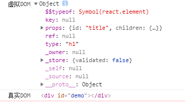
004、JSX 语法规则
- 定义虚拟DOM，不能使用
“” - 标签中混入JS表达式的时候使用
{}
1 | id = {myId.toUpperCase()}; |
- 样式的类名指定不能使用class，使用
className - 内敛样式要使用
{{}}包裹【外侧代表使用JS，内层括号代表键值对】
1 | style={{color:'skyblue',fontSize:'24px'}} |
- 不能有多个根标签，只能有一个根标签
- 标签必须闭合，自闭合也行
- 标签首字母：
- 如果小写字母开头，就将标签转化为 html 同名元素，如果 html 中无该标签对应的元素，就报错；
- 如果是大写字母开头，react 就去渲染对应的组件，如果没有就报错
1 注释
写在花括号里
1 | ReactDOM.render( |
2. 数组
JSX 允许在模板中插入数组，数组自动展开全部成员
1 | var arr = [ |
tip: JSX 小练习
根据动态数据生成 li
1 | const data = ['A','B','C'] |
再次强调，
{}中混入的是 JS表达式diff算法依赖
<li>便签的key值
二、面向组件编程
1 组件的使用
当应用是以多组件的方式实现，这个应用就是一个组件化的应用
注意：
组件名必须是首字母大写
虚拟DOM元素只能有一个根元素
虚拟DOM元素必须有结束标签
< />
渲染类组件标签的基本流程
React 内部会创建组件实例对象
调用
render()得到虚拟 DOM ,并解析为真实 DOM插入到指定的页面元素内部
1.1 函数式组件
1 | //1.先创建函数，函数可以有参数，也可以没有，但是必须要有返回值 返回一个虚拟DOM |
上面的代码经历了以下几步
- 我们调用
ReactDOM.render()函数，并传入<Welcome name="ljc" />作为参数。 - React 调用
Welcome组件，并将{name: 'ljc'}作为 props 传入。 Welcome组件将Hello, ljc元素作为返回值。- React DOM 将 DOM 高效地更新为
Hello,ljc。
1.2 类式组件

1 | class MyComponent extends React.Component { |
尚硅谷的React教程里详细讲了这个类里的构造器为什么可以不写？为什么state可以直接写？为什么change函数需要用箭头函数赋值？
在优化过程中遇到的问题
组件中的 render 方法中的 this 为组件实例对象
组件自定义方法中由于开启了严格模式，this 指向
undefined如何解决通过 bind 改变 this 指向
1
2
3
4// 在构造函数中
this.func = this.func.bind(this)
// bind函数做两件事:1.生成一个新函数2.修改新函数中的this
// 此操作在实例上生成一个func，实例原型上的func依然存在
- 推荐采用箭头函数，箭头函数的
this指向【箭头函数没有自己的this，但可以在函数体内部使用外层函数的this】
- state 数据不能直接修改或者更新
1.3 其他知识
包含表单元素的组件分为非受控组件与受控组件
- 受控组件：表单组件的输入组件随着输入并将内容存储到状态中（随时更新）
- 非受控组件：表单组件的输入组件的内容在有需求的时候才存储到状态中（即用即取）
2 组件实例三大属性
以前的只用类式组件才有三个属性，最新React推出的
Hooks，使得函数组件也可以
2.1 state
React 把组件看成是一个状态机（State Machines）。通过与用户的交互，实现不同状态，然后渲染 UI，让用户界面和数据保持一致。
React 里，只需更新组件的 state，然后根据新的 state 重新渲染用户界面（不要操作 DOM）。
简单的说就是组件的状态，也就是该组件所存储的数据
类式组件中的使用

使用的时候通过this.state调用state里的值
在类式组件中定义state
- 在构造器中初始化
state - 在类中添加属性
state来初始化
修改 state
在类式组件的函数中，直接修改state值
1 | this.state.weather = '凉爽' |
页面的渲染靠的是
render函数
这时候会发现页面内容不会改变，原因是 React 中不建议 state不允许直接修改，而是通过类的原型对象上的方法 setState()
setState()
1 | this.setState(partialState, [callback]); |
partialState: 需要更新的状态的部分对象callback: 更新完状态后的回调函数
有两种写法：写法1
1 | this.setState({ |
写法2：
1 | // 传入一个函数，返回x需要修改成的对象，参数为当前的 state |
setState是一种合并操作，不是替换操作
- 在执行
setState操作后，React 会自动调用一次render() render()的执行次数是 1+n (1 为初始化时的自动调用，n 为状态更新的次数)
2.2 props
与state不同，state是组件自身的状态，而props则是外部传入的数据
类式组件中使用

在使用的时候可以通过 this.props来获取值 类式组件的 props:
- 通过在组件标签上传递值，在组件中就可以获取到所传递的值
- 在构造器里的
props参数里可以获取到props - 可以分别设置
propTypes和defaultProps两个属性来分别操作props的规范和默认值，两者都是直接添加在类式组件的原型对象上的（所以需要添加static） - 同时可以通过
...运算符来简化

函数式组件中的使用
函数在使用props的时候，是作为参数进行使用的(props)

函数组件的 props定义:
- 在组件标签中传递
props的值 - 组件函数的参数为
props - 对
props的限制和默认值同样设置在原型对象上
2.3 refs
Refs 提供了一种方式，允许我们访问 DOM 节点或在 render 方法中创建的 React 元素。
在我们正常的操作节点时，需要采用DOM API 来查找元素，但是这样违背了 React 的理念，因此有了
refs
有三种操作refs的方法，分别为：
- 字符串形式
- 回调形式
createRef形式
1 字符串形式refs

虽然这个方法废弃了，但是还能用，还很好用hhh~【效率不高的问题】
2 回调形式的refs
组件实例的ref属性传递一个回调函数c => this.input1 = c（箭头函数简写），这样会在实例的属性中存储对DOM节点的引用，使用时可通过this.input1来使用
使用方法
1 | <input ref={c => this.input1 = c } type="text" placeholder="点击按钮提示数据"/> |
我的理解
c会接收到当前节点作为参数，ref的值为函数的返回值，也就是this.input1 = c，因此是给实例下的input1赋值
这种用法会在每次重新更新虚拟DOM时，执行两次此处的内联函数，且第一次传入null，第二次传入DOM元素【React 16.8 依然存在】
可以将回调函数写成class的绑定函数来避免上面的问题
2
3
4
5
6
// 在标签类中写
saveInput = (c) => {
this.input1 = c;
}但一般情况下，这个问题可以忽略
3 createRef 形式（推荐写法）
React 给我们提供了一个相应的API，它会自动的将该 DOM 元素放入实例对象中
我们先给DOM元素添加ref属性
1 | <input ref={this.MyRef} type="text" placeholder="点击弹出" /> |
通过API，创建React的容器，会将DOM元素赋值给实例对象的名称为容器的属性的current，好烦..
1 | MyRef = React.createRef(); |
注意：专人专用，一个节点创建一个容器
1 | //调用 |
注意：我们不要过度的使用 ref，如果发生时间的元素刚好是需要操作的元素，就可以使用事件对象去替代。过度使用有什么问题我也不清楚，可能有 bug 吧
2.4 事件处理
React 使用的是自定义事件，而不是原生的 DOM 事件
React 的事件是通过事件委托方式处理的（为了更加的高效）
可以通过事件的
event.target获取发生的 DOM 元素对象，可以尽量减少refs的使用

3 收集表单数据
- 非受控组件：表单中的数据，现用现取，绑定事件：当提交时触发
- 受控组件：表单中的数据，现用现取，绑定事件：当改变时触发，拿到值放入state中维护【即Vue中的双向绑定】
1 | <script type="text/babel"> |
5 高阶函数
高阶函数：参数是函数，或者返回值是函数
Promise、setTimeOut、arr.map()
链接高阶函数，关于AOP，偏函数，柯里化都有不错的记录，感觉还是不错的
函数柯里化：当onChange的回调函数需要传入参数时，需要在其回调函数中，返回一个回调函数
1 | //创建组件 |
不使用柯里化的写法：内联写法+箭头函数
1 | //创建组件 |
三、React 生命周期
React 生命周期主要包括三个阶段：初始化阶段，更新阶段，销毁阶段
初始化阶段
由ReactDom.render()触发—-初次渲染
1. constructor 执行
constructor 在组件初始化的时候只会执行一次
通常它用于做这两件事
- 初始化函数内部
state - 绑定函数
1 | constructor(props) { |
现在我们通常不会使用 constructor 属性，而是改用类加箭头函数的方法，来替代 constructor
例如，我们可以这样初始化 state
1 | state = { |
2. static getDerivedStateFromProps 执行 （新钩子）
这个是 React 新版本中新增的2个钩子之一，据说很少用。
getDerivedStateFromProps 在初始化和更新中都会被调用，并且在 render 方法之前调用，它返回一个对象用来更新 state
getDerivedStateFromProps 是类上直接绑定的静态（static）方法，它接收两个参数 props 和 state
props 是即将要替代 state 的值，而 state 是当前未替代前的值
注意：
state的值在任何时候都取决于传入的props，不会再改变
如下
1 | static getDerivedStateFromProps(props) { |
count 的值不会改变，一直是 109
2. componentWillMount 执行（即将废弃）
如果存在
getDerivedStateFromProps和getSnapshotBeforeUpdate就不会执行生命周期componentWillMount。
该方法只在挂载的时候调用一次，表示组件将要被挂载，并且在 render 方法之前调用。
这个方法在 React 18版本中将要被废弃，官方解释是在 React 异步机制下，如果滥用这个钩子可能会有 Bug
3. render 执行
render() 方法是组件中必须实现的方法，用于渲染 DOM ，但是它不会真正的操作 DOM，它的作用是把需要的东西返回出去。
实现渲染 DOM 操作的是 ReactDOM.render()
注意：避免在
render中使用setState，否则会死循环
4. componentDidMount 执行
componentDidMount 的执行意味着初始化挂载操作已经基本完成，它主要用于组件挂载完成后做某些操作
这个挂载完成指的是：组件插入 DOM tree
初始化阶段总结
执行顺序 constructor -> getDerivedStateFromProps 或者 componentWillMount -> render -> componentDidMount

更新阶段

这里记录新生命周期的流程
1. getDerivedStateFromProps 执行
执行生命周期getDerivedStateFromProps， 返回的值用于合并 state，生成新的state。【能接受默认参数：props；必须要有返回值，且为加static的静态方法】此方法用于一个罕见的用例，即state的值任何时候都却决于props。
2. shouldComponentUpdat 执行
shouldComponentUpdate() 在组件更新之前调用，可以通过返回值来控制组件是否更新，允许更新返回 true ，反之不更新
3. render 执行
在控制是否更新的函数中，如果返回 true 才会执行 render ,得到最新的 React element
4. getSnapshotBeforeUpdate 执行
在最近一次的渲染输出之前被提交之前调用，也就是即将挂载时调用
相当于淘宝购物的快照，会保留下单前的商品内容，在 React 中就相当于是 即将更新前的状态
它可以使组件在 DOM 真正更新之前捕获一些信息（例如滚动位置），此生命周期返回的任何值都会作为参数传递给
componentDidUpdate()。如不需要传递任何值，那么请返回 null
5. componentDidUpdate 执行
组件在更新完毕后会立即被调用，首次渲染不会调用
到此更新阶段就结束了，在 React 旧版本中有两个与更新有关的钩子函数 componentWillReceiveProps 【组件将要收到新的参数的时候】和 componentWillUpdate 都即将废弃
componentWillReceiveProps 我不太懂【课程39详解】
componentWillUpdate 在 render 之前执行，表示组件将要更新
销毁阶段
componentWillUnmount 执行
在组件即将被卸载或销毁时进行调用。由ReactDom.unmountComponentAtNode()
总结
初始化
- constructor()
- static getDerivedStateFromProps()
- render()
- componentDidMount() 【常用，初始化】
更新
- static getDerivedStateFromProps()
- shouldComponentUpdate()
- render()
- getSnapshotBeforeUpdate()
- componentDidUpdate()
销毁
- componentWillUnmount() 【常用，收尾工作】
四、diff算法
可参考 React diffing算法
开发注意以下即可
- 不要使用使用数据默认的index作为key
diff 算法是 React 提升渲染性能的一种优化算法，在 React 中有着很重要的地位，也不止于 React ，在 Vue 中也有 diff 算法。
五、认识脚手架

🍕 1. 什么是 React 脚手架？
在我们的 React 项目中，脚手架的作用与工地脚手架有异曲同工之妙【基于webpack】
React 脚手架其实是一个工具帮我们快速的生成项目的工程化结构，每个项目的结构其实大致都是相同的，所以 React 给我提前的搭建好了，这也是脚手架强大之处之一，也是用 React 创建 SPA 应用【Singel Page App】的最佳方式
🍔 2. 为什么要用脚手架？
在前面的介绍中，我们也有了一定的认知，脚手架可以帮助我们快速的搭建一个项目结构
在我之前学习 webpack 的过程中，每次都需要配置 webpack.config.js 文件，用于配置我们项目的相关 loader 、plugin，这些操作比较复杂，但是它的重复性很高，而且在项目打包时又很有必要，那 React 脚手架就帮助我们做了这些，它不需要我们人为的去编写 webpack 配置文件，它将这些配置文件全部都已经提前的配置好了。
🍟 3. 怎么用 React 脚手架？
这也是这篇文章的重点，如何去安装 React 脚手架，并且理解它其中的相关文件作用
此处重装npm，更新镜像源的时候知道的
nrm这个镜像源管理工具，
1. 安装 React 脚手架
首先确保安装了 npm 和Node，版本不要太古老，具体是多少不大清楚，建议还是用 npm update 更新一下
然后打开 cmd 命令行工具，全局安装 create-react-app【Facebook的一个react库，需要全局安装】
1 | npm i create-react-app -g |
然后可以新建一个文件夹用于存放项目
在当前的文件夹下执行
1 | create-react-app hello-react |
快速搭建项目
再在生成好的 hello-react 文件夹中执行
1 | npm start |
启动项目
接下来我们看看这些文件都有什么作用
2. 脚手架项目结构
1 | hello-react |
再介绍一下public目录下的 index.html 文件中的代码意思
1 |
|
3 功能界面的组件化编码流程
- 拆分组件
- 实现静态组件
- 实现动态组件
- 动态显示初始化数据
- 交互
六、TodoList 案例
一、拆分组件
首先第一步需要做的是将这个页面拆分成几个组件
首先顶部的输入框，可以完成添加项目的功能，可以拆分成一个 Header 组件
中间部分可以实现一个渲染列表的功能，可以拆分成一个 List 组件
在这部分里面，每一个待办事项都可以拆分成一个 Item 组件
最后底部显示当前完成状态的部分，可以拆分成一个 Footer 组件

在拆分完组件后，我们下一步要做的就是去实现这些组件的静态效果
二、实现静态组件
首先，我们可以先写好这个页面的静态页面，然后再分离组件，所以这就要求我们
以后写静态页面的时候，一定要有明确的规范
- 打好注释
- 每个部分的 CSS 要写在一个地方，不要随意写
- 命名一定要规范
- CSS 选择器不要关联太多层级
- 在写 HTML 时就要划分好布局
这样有利于我们分离组件
首先，我们在 src 目录下，新建一个 Components 文件夹，用于存放我们的组件，然后在文件夹下，新建 Header 、Item、List 、Footer 组件文件夹，再创建其下的 index.jsx，index.css 文件，用于创建对应组件及其样式文件
1 | todolist |
最终目录结构如上
然后我们将每个组件，对应的 HTML 结构 CV 到对应组件的 index.jsx 文件中 return 出来，再将 CSS 样式添加到 index.css 文件中
记得，在 index.jsx 中一定要引入 index.css 文件
实现了静态组件后，我们需要添加事件等，来实现动态组件
三、实现动态组件
🍎 1. 动态展示列表
我们目前实现的列表项是固定的，我们需要它通过状态来维护，而不是通过组件标签来维护
首先我们知道，父子之间传递参数，可以通过 state 和 props 实现
我们通过在父组件也就是 App.jsx 中设置状态

再将它传递给对应的渲染组件 List
1 | const { todos } = this.state |
这样在 List 组件中就能通过 props 来获取到 todos
我们通过解构取出 todos
1 | const { todos, updateTodo } = this.props |
再通过 map 遍历渲染 Item 数量
1 | { |
同时由于我们的数据渲染最终是在 Item 组件中完成的，所以我们需要将数据传递给 Item 组件
这里有两个注意点
- 关于
key的作用在 diff 算法的文章中已经有讲过了，需要满足唯一性 - 这里采用了简写形式
{...todo}，这使得代码更加简洁，它代表的意思是
1 | id = {todo.id} name = {todo.name} done = {todo.done} |
在 Item 组件中取出 props 即可使用
1 | const { id, name, done } = this.props |
这样我们更改 APP.jsx 文件中的 state 就能驱动着 Item 组件的更新，如图

同时这里需要注意的是
对于复选框的选中状态，这里采用的是 defaultChecked = {done}，相比于 checked 属性，这个设定的是默认值，能够更改
🍍 2. 添加事项功能
首先我们需要在 Header 组件中，绑定键盘事件，判断按下的是否为回车，如果为回车，则将当前输入框中的内容传递给 APP 组件
因为，在目前的学习知识中，Header 组件和渲染组件 List 属于兄弟组件，没有办法进行直接的数据传递，因此可以将数据传递给 APP 再由 APP 转发给 List。
1 | // Header/index.jsx |
我们在 App.jsx 中添加了事件 addTodo ，这样可以将 Header 组件传递的参数，维护到 App 的状态中
1 | // App.jsx |
在这小部分中，需要我们注意的是，我们新建的 todo 对象，一定要保证它的 id 的唯一性
这里采用的 nanoid 库，这个库的每一次调用都会返回一个唯一的值
1 | npm i nanoid |
安装这个库，然后引入
通过 nanoid() 即可生成唯一值

🍋 3. 实现鼠标悬浮效果
接下来我们需要实现每个 Item 中的小功能
首先是鼠标移入时的变色效果
我的逻辑是，通过一个状态来维护是否鼠标移入，比如用一个 mouse 变量，值给 false 当鼠标移入时，重新设定状态为 true 当鼠标移出时设为 false ，然后我们只需要在 style 中用mouse 去设定样式即可
下面我们来代码实现
在 Item 组件中，先设定状态
1 | state = { mouse: false } // 标识鼠标移入，移出 |
给元素绑定上鼠标移入，移出事件
1 | <li onMouseEnter={this.handleMouse(true)} onMouseLeave={this.handleMouse(false)} ><li/> |
当鼠标移入时，会触发 onMouseEnter 事件，调用 handleMouse 事件传入参数 true 表示鼠标进入，更新组件状态
1 | handleMouse = flag => { |
再在 li 身上添加由 mouse 控制的背景颜色
1 | style={{ backgroundColor: this.state.mouse ? '#ddd' : 'white' }} |
同时通过 mouse 来控制删除按钮的显示和隐藏，做法和上面一样

观察 mouse 的变化
🍉 4. 复选框状态维护
我们需要将当前复选框的状态，维护到 state 当中
我们的思路是
在复选框中添加一个 onChange 事件来进行数据的传递，当事件触发时我们执行 handleCheck 函数，这个函数可以向 App 组件中传递参数，这样再在 App 中改变状态即可
首先绑定事件
1 | // Item/index.jsx |
事件回调
1 | handleCheck = (id) => { |
由于我们需要传递 id 来记录状态更新的对象，因此我们需要采用高阶函数的写法，不然函数会直接执行而报错，复选框的状态我们可以通过 event.target.checked 来获取
这样我们将我们需要改变状态的 Item 的 id 和改变后的状态，传递给了 App
内定义的updateTodo 事件，这样我们可以在 App 组件中操作改变状态
我们传递了两个参数 id 和 done
通过遍历找出该 id 对应的 todo 对象，更改它的 done 即可
1 | // App.jsx |
这里更改的方式是 { ...todoObj, done }，首先会展开 todoObj 的每一项，再对 done 属性做覆盖

🍏 5. 限制参数类型
在我们前面写的东西中，我们并没有对参数的类型以及必要性进行限制
在前面我们也学过这个，我们需要借助 propTypes 这个库
首先我们需要引入这个库，然后对 props 进行限制
1 | // Header |
在Header 组件中需要接收一个 addTodo 函数，所以我们进行一下限制
同时在 List 组件中也需要进行对 todos 以及 updateTodo 的限制
如果传入的参数不符合限制，则会报 warning
🍒 6. 删除按钮
现在我们需要实现删除按钮的效果
这个和前面的挺像的，首先我们分析一下，我们需要在 Item 组件上的按钮绑定点击事件，然后传入被点击事项的 id 值，通过 props 将它传递给父元素 List ，再通过在 List 中绑定一个 App 组件中的删除回调，将 id 传递给 App 来改变 state
首先我们先编写 点击事件
1 | // Item/index.jsx |
绑定在点击事件的回调上
子组件想影响父组件的状态，需要父组件传递一个函数，因此我们在 App 中添加一个 deleteTodo 函数
1 | // app.jsx |
然后将这个函数传递给 List 组件，再传递给 Item
增加一个判断
1 | if(window.confirm('确认删除')) { |

🍓 7. 获取完成数量
我们在 App 中向 Footer 组件传递 todos 数据，再去统计数据
统计 done为 true 的个数
1 | const doneCount = todos.reduce((pre, todo) => { |
再渲染数据即可

🍊 8. 全选按钮
首先我们需要在按钮上绑定事件，由于子组件需要改变父组件的状态，所以我们的操作和之前的一样，先绑定事件，再在 App 中传一个函数个 Footer ，再在 Footer 中调用这个函数并传入参数即可
这里需要特别注意的是
defaulChecked 只有第一次会起作用，所以我们需要将前面写的改成 checked 添加 onChange 事件即可
首先我们先在 App 中给 Footer 传入一个函数 checkAllTodo
1 | // App.jsx |
然后我们需要在 Footer 中调用一下
1 | handleCheckAll = (event) => { |
这里我们传入了一个参数：当前按钮的状态，用于全选和取消全选
同时我们需要排除总数为0 时的干扰
1 | <input type="checkbox" checked={doneCount === total && total !== 0? true : false} onChange={this.handleCheckAll} /> |

🥭 9. 删除已完成
给删除按钮添加一个点击事件，回调中调用 App 中添加的删除已完成的函数，全都一个套路
强烈建议这个自己打
首先在 Footer 组件中调用传来的函数，在 App 中定义函数，过滤掉 done 为 true 的，再更新状态即可
1 | // App.jsx |

总结
- 注意：className、style 写法
- 父组件给子组件传递数据，采用
props - 子组件给父组件传递数据，通过
props，同时提前给子组件传递一个函数 - 注意
defaultChecked和checked的区别
七、脚手架配置代理
1 ajax
React 本身只关注于页面，并不包含发送 Ajax 请求的代码，所以一般都是集成第三方的包，或者自己封装的
自己封装的话，比较麻烦，而且也可能考虑不全
常用的有两个库，一个是JQuery，一个是 axios
- JQuery 这个比较重，因为 Ajax 服务也只是它这个库里的一小块功能，它主要做的还是 DOM 操作，而这不利于 React ，不推荐使用
- axios 这个就比较轻，而且采用 Promise 风格，代码的逻辑会相对清晰，推荐使用
因此我们这里采用 axios 来发送客户端请求
1 | getData = () =>{ |
2 跨域问题
以前，我们在发送请求的时候，经常会遇到一个很重要的问题：跨域！

在我以前的学习中，基本上都需要操作后端服务器代码才能解决跨域的问题，配置请求头，利用 script，这些都需要后端服务器的配合，因此我们前端需要自己解决这个问题的话，就需要这个技术了：代理。
在说代理之前，先谈谈为什么会出现跨域？
这个应该是源于浏览器的同源策略。所谓同源（即指在同一个域）就是两个页面具有相同的协议，主机和端口号， 当一个请求 URL 的协议、域名、端口三者之间任意一个与当前页面 URL 不同即为跨域 。
也就是说 xxx:3000和 xxx:4000 会有跨域问题，xxx:3000 与 abc:3000 有跨域问题。本质是使用了ajax引擎，导致了跨域问题
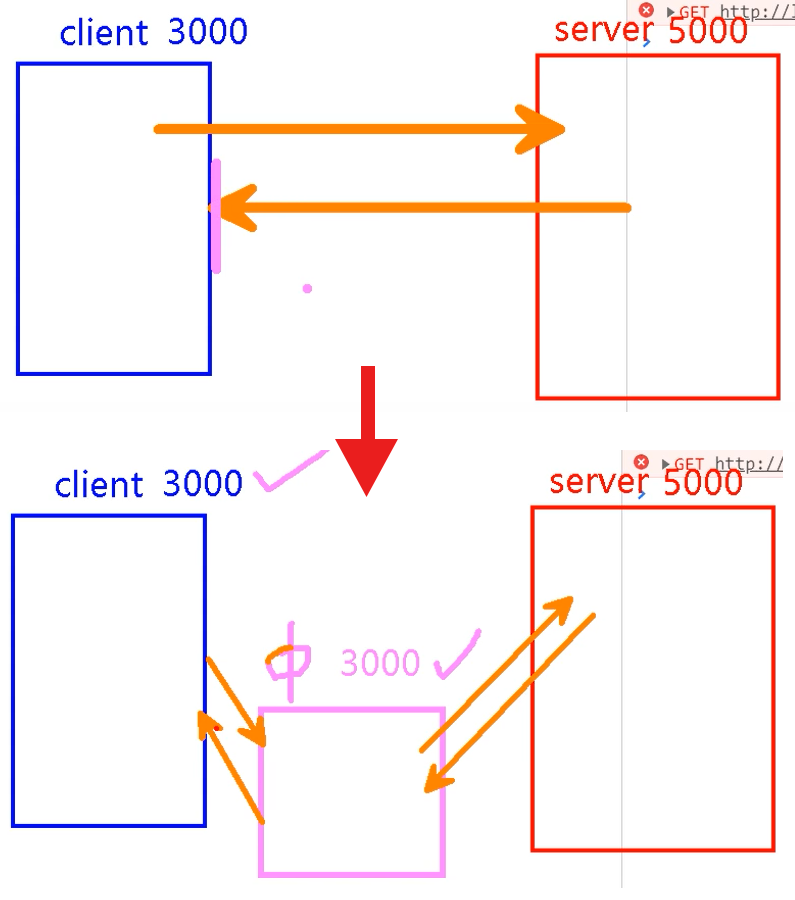
那接下来我们采用配置代理的方式去解决这个问题
实际生产环境中，一般后端使用cors解决跨域问题
2.1 全局代理
第一种方法，我把它叫做全局代理，因为它直接将代理配置在了配置文件 package.json 中
1 | "proxy":"http://localhost:5000" |
这样配置代理时，首先会在抓原请求地址上访问，如果访问不到文件，就会转发到这里配置的地址上去请求

我们需要做的就是在我们的请求代码中，将请求的地址改到转发的地址，即可
但是这样会有一些问题，它会先向我们请求的地址，也就是这里的 3000 端口下请求数据，如果在 3000 端口中存在我们需要访问的文件，会直接返回，不会再去转发
因此这就会出现问题，同时因为这种方式采用的是全局配置的关系，导致只能转发到一个地址，不能配置多个代理
2.2 单独配置
这也是我自己起的名字，这种配置方式，可以给多个请求配置代理，非常不错
它的工作原理和全局配置是一样的，但是写法不同
首先我们需要在 src 目录下，创建代理配置文件 setupProxy.js
注意：这个文件只能叫这个名字，脚手架在启动的时候，会自动执行这些文件
第二步
配置具体的代理规则，我们大致讲讲这些是什么意思
首先我们需要引入这个
http-proxy-middleware中间件，然后需要导出一个对象，这里建议使用函数，使用对象的话兼容性不大好然后我们需要在
app.use中配置，我们的代理规则，首先proxy接收的第一个参数是需要转发的请求，我的理解是一个标志的作用，当有这个标志的时候，预示着我们需要采用代理，例如/api1，我们就需要在我们axios的请求路径中，加上/api1，这样所有添加了/api1前缀的请求都会转发到这第二个参数接受的是一个对象，用于配置代理。
target属性用于配置转发目标地址，也就是我们数据的地址changeOrigin属性用于控制服务器收到的请求头中host字段，可以理解为一个伪装效果，为true时，收到的host就为请求数据的地址pathRewrite属性用于去除请求前缀，因为我们通过代理请求时，需要在请求地址前添加一个标志，但是实际的地址是不存在这个标志的，所以我们一定要去除这个前缀，这里采用的有点类似于正则替换的方式
配置一个代理的完整代码如下
1 | const proxy = require('http-proxy-middleware') |
八、GitHub 搜索案例
1 实现静态组件
和之前的 TodoList 案例一样，我们需要先实现静态组件，在实现静态组件之前，我们还需要拆分组件，这个页面的组件，我们可以将它拆成以下两个组件，第一个组件是 Search，第二个是 List

接下来我们需要将提前写好的静态页面，对应拆分到组件当中
注意：
- class 需要改成 className
- style 的值需要使用双花括号的形式
最重要的一点就是，img 标签，一定要添加 alt 属性表示图片加载失败时的提示。
同时，a 标签要添加 rel="noreferrer"属性，不然会有大量的警告出现

es6解构赋值的连写方式
2
3
console.log(value); // 正确
console.log(keyWordElement); // 错误个人感觉用处不大
2 axios 发送请求
在实现静态组件之后，我们需要通过向 github 发送请求，来获取相应的用户信息
但是由于短时间内多次请求，可能会导致请求不返回结果等情况发生，因此我们采用了一个事先搭建好的本地服务器
我们启动服务器，向这个地址发送请求即可

这个请求类型是 GET 请求，我们需要传递一个搜索的关键字，去请求数据
我们首先要获取到用户点击搜索按钮后输入框中的值
在需要触发事件的 input 标签中，添加 ref 属性
1 | <input ref={c => this.keyWordElement = c} type="text" placeholder="输入关键词点击搜索" /> |
我们可以通过 this.keyWordElement 属性来获取到这个当前节点，也就是这个 input 框
我们再通过 value 值，即可获取到当前 input 框中的值
1 | // search 回调 |
这里采用的是连续的解构赋值，最后将 value 改为 keyWord ，这样好辨别
获取到了 keyWord 值，接下来我们就需要发送请求了
1 | axios.get(`http://localhost:3000/api1/search/users?q=${keyWord}`).then( |
我们将 keyWord 接在请求地址的后面，来传递参数，以获得相关数据
这里会存在跨域的问题，因我我们是站在 3000 端口向 5000 端口发送请求的
因此我们需要配置代理来解决跨域的问题，我们需要在请求地址前，加上启用代理的标志 /api1
1 | // setupProxy.js |
这样我们就能成功的获取到了数据

3 渲染数据
在获取到了数据之后，我们需要对数据进行分析，并将这些数据渲染到页面上
比较重要的一点是，我们获取到的用户个数是动态的，因此我们需要通过遍历的方式去实现
同时我们的数据当前存在于 Search 组件当中，我们需要在 List 组件中使用，所以我们需要个 Search 组件传递一个函数，来实现子向父传递数据，再通过 App 组件，向List 组件传递数据即可得到 data
1 | users.map((userObj) => { |
这里我们通过 map 遍历整个返回的数据，来循环的添加 card 的个数
同时将一些用户信息添加到其中
4 增加交互
做到这里其实已经完成了一大半了，但是似乎少了点交互
- 加载时的 loading 效果
- 第一次进入页面时 List 组件中的欢迎使用字样
- 在报错时应该提示错误信息
这一些都预示着我们不能单纯的将用户数据直接渲染，我们需要添加一些判断，什么时候该渲染数据，什么时候渲染 loading，什么时候渲染 err
首先我们需要增加一些状态，来指示我们该渲染什么，比如
- 采用
isFrist来判断页面是否第一次启动，初始值给true，点击搜索后改为false - 采用
isLoading来判断是否应该显示 Loading 动画，初始值给false，在点击搜索后改为true，在拿到数据后改为false - 采用
err来判断是否渲染错误信息，当报错时填入报错信息，初始值给空
1 | state = { users: [], isFirst: true, isLoading: false, err: '' } |
这样我们就需要改变我先前采用的数据传递方式，采用更新状态的方式，接收一个状态对象来更新数据，这样就不用去指定什么时候更新什么，就可以减少很多不必要的函数声明
同时在 App 组件给 List 组件传递数据时，我们可以采用解构赋值的方式，这样可以减少代码量
1 | // App.jsx |
这样我们只需要在 List 组件中，判断这些状态的值，来显示即可
1 | // List/index.jsx |
我们需要先判断是否第一次，再判断是不是正在加载，再判断有没有报错，最后再渲染数据
我们的状态更新是在 Search 组件中实现的，在点击搜索之后数据返回之前，我们需要将 isFirst 改为 false ，isLoading 改为 true
接收到数据后我们再将 isLoading 改为 false 即可
以上就是 Github 搜索案例的实现过程

九、消息发布订阅
这里我们就学习一下如何利用消息订阅发布来解决兄弟组件间的通信
PubSub
要解决上面的问题，我们可以借助发布订阅的机制，我们可以将 App 文件中的所有状态和方法全部去除，因为本来就不是在 App 组件中直接使用这些方法的，App 组件只是一个中间媒介而已
我们先简单的说一下消息订阅和发布的机制
就拿我们平常订杂志来说，我们和出版社说我们要订一年的足球周刊，那每次有新的足球周刊，它都会寄来给你。换到代码层面上，我们订阅了一个消息假设为 A，当另一个人发布了 A 消息时，因为我们订阅了消息 A ，那么我们就可以拿到 A 消息，并获取数据
那我们要怎么实现呢？
1 | // 首先引入 `pubsub-js`，我们需要先安装这个库 |
订阅消息
我们通过 subscribe 来订阅消息，它接收两个参数，第一个参数是消息的名称，第二个是消息成功的回调，回调中也接受两个参数，一个是消息名称，一个是返回的数据
1 | PubSub.subscribe('search',(msg,data)=>{ |
发布消息
我们采用 publish 来发布消息，用法如下
1 | PubSub.publish('search',{name:'tom',age:18}) |
有了这些基础，我们可以完善我们昨天写的 GitHub 案例
将数据的更新通过 publish 来传递，例如在发送请求之前，我们需要出现 loading 字样
1 | // 之前的写法 |
这样我们就能成功的在请求之前发送消息，我们只需要在 List 组件中订阅一下这个消息即可，并将返回的数据用于更新状态即可
1 | PubSub.subscribe('search',(msg,stateObj)=>{ |
同时上面的代码会返回一个 token ，这个就类似于定时器的编号的存在，我们可以通过这个 token 值，来取消对应的订阅
通过 unsubscribe 来取消指定的订阅
1 | PubSub.unsubscribe(this.token) |
扩展 – Fetch
首先 fetch 也是一种发送请求的方式，它是在 xhr 之外的一种，我们平常用的 Jquery 和 axios 都是封装了 xhr 的第三方库，而 fetch 是官方自带的库，同时它也采用的是 Promise 的方式，大大简化了写法
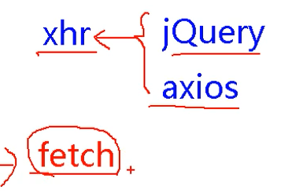
如何使用呢？
1 | fetch('http://xxx') |
它的使用方法和 axios 非常的类似，都是返回 Promise 对象，但是不同的是， fetch 关注分离，它在第一次请求时，不会直接返回数据，会先返回联系服务器的状态，在第二步中才能够获取到数据
我们需要在第一次 then 中返回 response.json() 因为这个是包含数据的 promise 对象，再调用一次 then 方法即可实现
原案例也可以改造为：
1 | //#region 发送网络请求---使用axios发送 |
但是这么多次的调用 then 并不是我们所期望的，相信看过之前生成器的文章的伙伴，已经有了想法。
我们可以利用 async 和 await 配合使用，来简化代码
可以将 await 理解成一个自动执行的 then 方法，这样清晰多了
1 | async function getJSON() { |
最后关于错误对象的获取可以采用 try...catch 来实现
关于 fetch 的更多内容：阮一峰老师的博文
十、React 路由
🍕 1. SPA
每个选项都要对应一个 HTML 文件，这样会很麻烦，甚至不友好，我们把这种称为 MPA 也叫多页面应用。而为了减少这样的情况，我们还有另一种应用，叫做 SPA ，单页应用程序。它比传统的 Web 应用程序更快，因为它们在 Web 浏览器本身而不是在服务器上执行逻辑。在初始页面加载后，只有数据来回发送，而不是整个 HTML，这会降低带宽。它们可以独立请求标记和数据，并直接在浏览器中呈现页面。
🍔 2. 什么是路由？
路由是根据不同的 URL 地址展示不同的内容或页面
在 SPA 应用中，大部分页面结果不改变，只改变部分内容的使用
后端路由
- 理解：value是function，用来处理客户端提交的请求；
- 注册路由：router.get(path, function(req, res))
- 工作过程：在node接受到一个请求时，根据请求路径匹配路由，调用路由中的函数来处理请求和响应数据
前端路由
- 浏览器端路由：value是Component，用于展示页面
- 注册路由：
<Router path="/test" component={Test}/> - 工作过程：当浏览器的
path变为/path的时候，当前路由组件就会变成Test组件
前端路由的优缺点
优点
用户体验好，不需要每次都从服务器全部获取整个 HTML，快速展现给用户
缺点
- SPA 无法记住之前页面滚动的位置，再次回到页面时无法记住滚动的位置
- 使用浏览器的前进和后退键会重新请求，没有合理利用缓存
🍟 3. 路由的原理
前端路由的主要依靠的是 history ，也就是浏览器的历史记录。浏览器的历史记录就类似于一个栈的数据结构，前进就相当于入栈，后退就相当于出栈，并且历史记录上可以采用 listen 来监听请求路由的改变，从而判断是否改变路径
history 是 BOM 对象下的一个属性，在 H5 中新增了一些操作 history 的 API
在 H5 中新增了 createBrowserHistory 的 API ，用于创建一个 history 栈，允许我们手动操作浏览器的历史记录
新增 API：pushState ，replaceState，原理类似于 Hash 实现。 用 H5 实现，单页路由的 URL 不会多出一个 # 号，这样会更加的美观，且兼容性更好，类似于锚点跳转
1 | let history = History.createHashHistory(); |
🌭 4. 路由的基本使用
react-router-dom 的理解和使用
专门给 web 人员使用的库【还有用于native、其他any的路由库 |
react-router】
- 一个 react 的仓库
- 很常用，基本是每个应用都会使用的这个库
- 专门来实现 SPA 应用
首先我们要明确好页面的布局 ，分好导航区、展示区
要引入 react-router-dom 库，暴露一些属性 Link、BrowserRouter...
1 | import { Link, BrowserRouter, Route } from 'react-router-dom' |
导航区的 a 标签改为 Link 标签
1 | // 包裹在一个路由器中，一标签一路由器 |
同时我们需要用 Route 标签，来进行路径的匹配，从而实现不同路径的组件切换
1 | // 注册路由 编写路由链接 |
这样之后我们还需要一步，加个路由器，在上面我们写了两组路由，同时还会报错指示我们需要添加 Router 来解决错误，这就是需要我们添加路由器来管理路由，如果我们在 Link 和 Route 中分别用路由器管理，那这样是实现不了的，只有在一个路由器的管理下才能进行页面的跳转工作。
因此我们也可以在 Link 和 Route 标签的外层标签采用 BrowserRouter 包裹，但是这样当我们的路由过多时，我们要不停的更改标签包裹的位置，因此我们可以这么做
我们回到 App.jsx 目录下的 index.js 文件，将整个 App 组件标签采用 BrowserRouter 标签去包裹，这样整个 App 组件都在一个路由器的管理下
1 | // index.js |

🍿 5. 路由组件和一般组件
在我们前面的内容中，我们是把组件 Home 和组件 About 当成是一般组件来使用，我们将它们写在了 src 目录下的 components 文件夹下，但是我们又会发现它和普通的组件又有点不同，对于普通组件而言，我们在引入它们的时候我们是通过标签的形式来引用的。但是在上面我们可以看到，我们把它当作路由来引用时，我们是通过 {Home} 来引用的。
从这一点我们就可以认定一般组件和路由组件存在着差异
首先它们的写法不同
一般组件：<Demo/>，路由组件：<Route path="/demo" component={Demo}/>
同时为了规范我们的书写，一般将路由组件放在 pages 文件夹中，路由组件放在 components
而最重要的一点就是它们接收到的 props 不同，在一般组件中，如果我们不进行传递，就不会收到值。而对于路由组件而言，它会接收到 3 个固定属性 history 、location 以及 match

🍛 6. NavLink 标签
NavLink 标签是和 Link 标签作用相同的，但是它又比 Link 更加强大。
在前面的 demo 展示中，你可能会发现点击的按钮并没有出现高亮的效果，正常情况下我们给标签多添加一个 active 的类就可以实现高亮的效果
而 NavLink 标签正可以帮助我们实现这一步
当我们选中某个 NavLink 标签时，就会自动的在类上添加一个 active 属性
1 | <NavLink className="list-group-item" to="/about">About</NavLink> |

我们可以看到左侧的元素类名在不断的切换，当然 NavLink 标签是默认的添加上 active 类，我们也可以改变它，在标签上添加一个属性 activeClassName
例如 activeClassName="aaa" 在触发这个 NavLink 时，会自动添加一个 aaa 类
🥩 7. NavLink 封装
在上面的 NavLink 标签种，我们可以发现我们每次都需要重复的去写这些样式名称或者是 activeClassName ，这并不是一个很好的情况，代码过于冗余。那我们是不是可以想想办法封装一下它们呢？
我们可以采用 MyNavLink 组件，对 NavLink 进行封装
首先我们需要新建一个 MyNavLink 组件
return 一个结构
1 | <NavLink className="list-group-item" {...this.props} /> |
首先，有一点非常重要的是，我们在标签体内写的内容都会成为一个 children 属性，因此我们在调用 MyNavLink 时，在标签体中写的内容，都会成为 props 中的一部分，从而能够实现
接下来我们在调用时，直接写
1 | <MyNavLink to="/home">home</MyNavLink> |
即可实现相同的效果
以上就是本节关于 React 路由的相关知识！
九九九、小问题
1ES6引入的形式问题
1 | // 第一种是在源文件中采用了默认暴露的方式：export default App |
2 VSCode的React插件
**ES7 React/Redux/…**：支持代码片段：rcc rfc